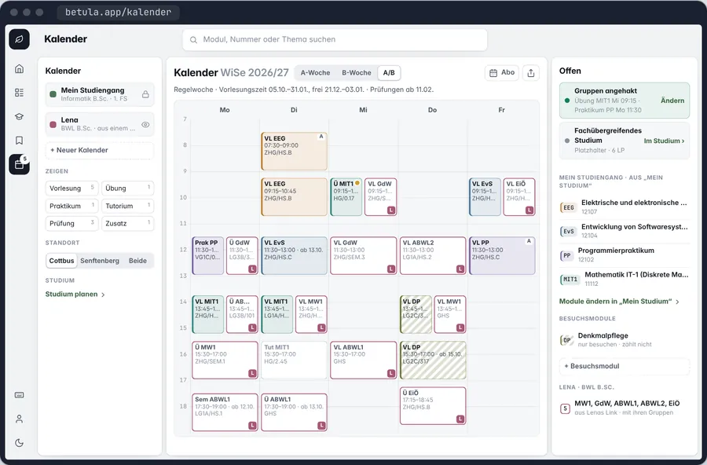

A ist entschieden, mit dem Fokus und der Spur aus C. Neu ist, dass sich in jeden Kalender Module aufnehmen lassen; in „Mein Studiengang“ wird so ein Modul zum Besuchsmodul, auch in „Mein Studium“. Ein Prototyp am Rechner und am Handy, in sieben Zuständen, die du oben wählst oder im Prototyp anklickst; auf den Daten von Informatik B.Sc. im 1. FS (canary, 26.10.), mit Denkmalpflege und Biologie als Besuchsmodulen und Lenas Kalender (BWL B.Sc., 1. FS).
„A mit Fokus und Spur aus C, Besuchmodul kann pro kallender gemacht werden also eher bei jedem kallender kann man auch andere module hinyufügen. Aber beim Studien Plan zählt es dann als besucher modul“
A bleibt in seiner Ordnung. Aus C kommen der Fokus und die Spur, aus deiner Antwort „+ Modul“ in jedem Kalender.

A mit Fokus und Spur aus COffen holt eine Wahl nach vorn. Ein Tipp auf „Übung MIT1 · 1 von 3“ umrandet ihre drei Gruppen mit einem Haken und lässt den Rest der Woche zurücktreten, bis „Fertig“.
A mit Fokus und Spur aus CJeder Kalender voll, als Spur oder aus. Ein Schalter mit drei Stellungen am Kalender; Lenas 13 Termine stehen als Spur am Rand jedes Tages, statt die eigene Woche zu teilen.
bei jedem kallender kann man auch andere module hinyufügen„+ Modul“ an jedem Kalender. Die Modulliste rechts hat einen Teil je Kalender, jeder mit „+ Modul“.
beim Studien Plan zählt es dann als besucher modulIn „Mein Studiengang“ wird es ein Besuchsmodul, schraffiert in der Woche und in „Mein Studium“ als Besuch ohne LP.
Zum Anklicken: Offen holt eine Wahl in den Fokus, der Haken an einer Gruppe nimmt sie, „Fertig“ beendet den Fokus. Lenas Kalender schaltet zwischen voll, Spur und aus; „+ Modul“ öffnet die Auswahl. Oben in der Leiste springst du in jeden Zustand.
Was jeder Teil kann, mit dem Knopf, der es tut. Betulas eigene Tasten stehen beim Knopf.
Jeder eigene Kalender hat einen Schalter mit drei Stellungen: voll, als Spur, aus. Das Kästchen vor dem Namen zeigt die Stellung auch, wenn der Schalter schmal wird. „Mein Studiengang“ hat ein Schloss: immer voll.
Ein Tipp auf eine Zeile unter Offen holt sie in den Fokus; über der Woche steht dann, was zu tun ist. „Weiter“ geht zur nächsten offenen Wahl, „Fertig“ beendet den Fokus, schneller mit Esc. Ohne Haken bleibt eine Wahl offen; angehakt wird, so viel man will.
„+ Modul“ steht an jedem Kalender. Für Lenas Kalender heißt die Auswahl „Modul in „Lena““ und sagt nichts vom Studium; ihre Module zählen nirgends.
Was in „Mein Studiengang“ aufgenommen wird, steht auch im Semester in „Mein Studium“, auf „nur besuchen“: mit eigenem Zeichen, ohne LP, außerhalb der Bereiche. Es zählt nur, was in „Mein Studium“ eingetragen ist. So bleibt „Mein Studium“ der eine Weg, das Studium zu planen, und sieht trotzdem alles, was in der Woche steht.
„Nur besuchen“ ist der Schalter vom 19.10.: angehakt in der Woche, nicht in den LP. Ohne den Haken ist das Modul in „Mein Studium“ eingetragen und zählt; das geht nur dort, nicht im Kalender. Bestanden markieren gibt es für einen Besuch nicht.
Ein Klick setzt den Prototyp oben in diesen Zustand.
Farbe trägt nur Bedeutung: der Ton das Modul oder den Kalender, Gelb anders als sonst und ein Besuch, der nachgibt, Rot eine Überschneidung im Studium.
Wie steht ein neuer Kalender in der Woche?
Entschieden: wie vorgeschlagen, voll, bis er mehr als acht Termine in der Woche hat, dann als Spur. Der Schalter ändert es jederzeit.
Wo steht „Gemeinsam frei“?
Entschieden: wie vorgeschlagen, als Schalter im Kopf der Woche, sobald ein zweiter Kalender sichtbar ist; aus, bis man ihn einschaltet.
Ein Besuchsmodul in „Mein Studium“: so, mit „Zählen lassen“?Gemeint war: Kann man einen Besuch in „Mein Studium“ doch zählen lassen?
Entschieden: „module, die nicht in Mein studium eingetragen werden zählen nicht zum studium.“ Ein Modul aus dem Kalender steht dort auf „nur besuchen“, wie am 19.10. entschieden. Ohne den Haken ist es eingetragen und zählt; „Zählen lassen“ gibt es nicht.
Zeigt die Startseite die eigenen Kalender?
Entschieden: wie vorgeschlagen, „Mein Studiengang“ mit seinen Besuchsmodulen immer; ein eigener Kalender nur mit „Auf der Startseite zeigen“ in seinem Menü.
Ein Modul in zwei Kalendern?
Entschieden: wie vorgeschlagen, ja; jeder Kalender hat seine eigene Gruppenwahl. In der Woche steht es dann zweimal, einmal voll, einmal in der Form des anderen Kalenders.
Nach einem Haken im Fokus: weiter zur nächsten Wahl?
Entschieden: wie vorgeschlagen, der Fokus bleibt; „Weiter“ neben „Fertig“ springt zur nächsten offenen Wahl. Im Prototyp jetzt so.
Am Handy: wie schaltet man einen Kalender?
Entschieden: „Also chips sind wirklich in 90% der Zeit ein schlechtes UI tool. Bei der handy version muss nochmal dringend daran gearbeitet werden, wie man das richtig macht mit dem übung auswählen.“ Neu gedacht in Kalender am Handy: die Kalender als Zeilen mit Voll · Spur · Aus, die Gruppen mit den Kacheln des Termins.
Konzept, nichts davon ist gebaut · Daten von canary, 26.10.2026 · Folia 1.45.3